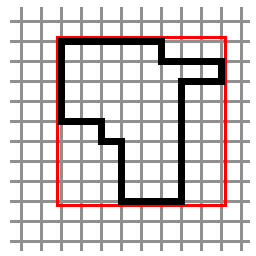
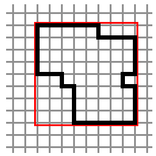

|
Kaylee: Is that him? Mal: That's the buffet table. Kaylee: Well... how do we know unless we... question it? |
In the good old days, Atherton Wing used to be a respected gentleman and an expert at fencing, but things have changed. Now, the only fencing he does is around cattle on his ranch. His fortune has been improving lately, and he has decided to buy a new pasture. He has enough money to buy n one-meter segments of fencing and must surround an area of a field with a fence. The rules on Persephone dictate that each one-meter fence segment must be placed either in the east-west direction or in the north-south direction. Fence segments must not intersect and each segment must be connected to exactly two other segments, one on each end. Cattle must be able to walk freely from any point inside the surrounded area to any other point inside the fence.
In addition to those rules, Atherton knows that the government keeps track of each pasture by recording the smallest bounding rectangle that contains the pasture. No parts of the field inside this rectangle will be sold to other farmers. In case that Atherton does not have enough money to buy the whole rectangle right now, he wants to build his fence in such a way that he will be able to move the segments later and surround the whole bounding rectangle in the future, without wasting segments. In other words, he should not be able to surround the whole bounding rectangle and have extra fence segments left over. Finally, he must use all of his available fence segments and surround a pasture of positive area. The image on the left shows a valid pasture of perimiter 32 and its bounding rectangle. The example on the right is invalid because the same number of fence segments can be used to surround everything inside the bounding rectangle, plus one more square meter of land.
|  |  |
In how many different shapes can Atherton arrange his fence segments to obey all of the above conditions? Shapes that are symmetric (with respect to rotation or reflection) are considered different. The image below shows all the 7 possible shapes built using 8 fence segments.
Output
For each test case, output one line containing "Case #x:"
followed by the number of different shapes he can build.
| Sample Input | Sample Output |
3 8 49 100 |
Case #1: 7 Case #2: 0 Case #3: 357215388993130669706869321408 |